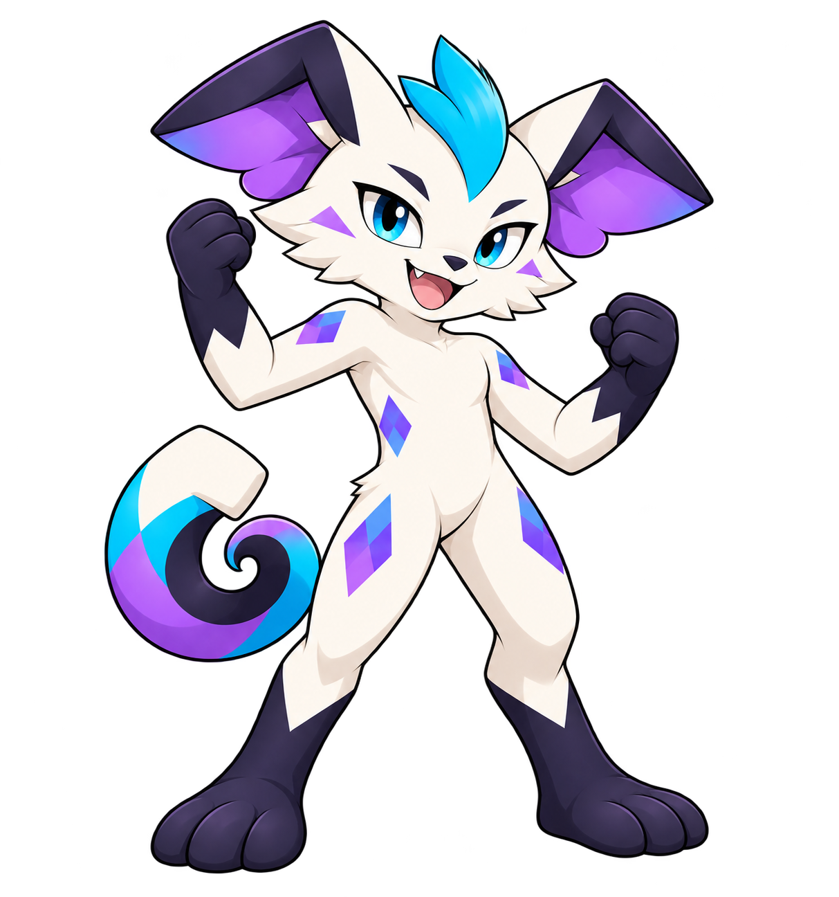
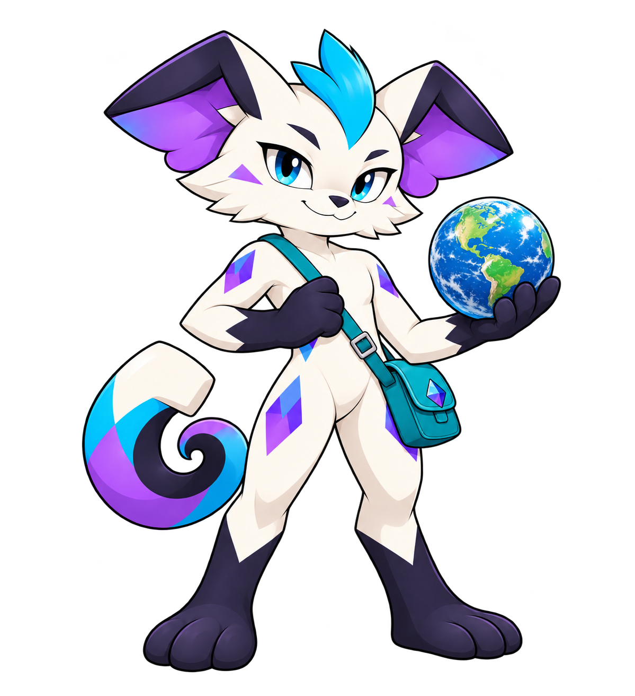
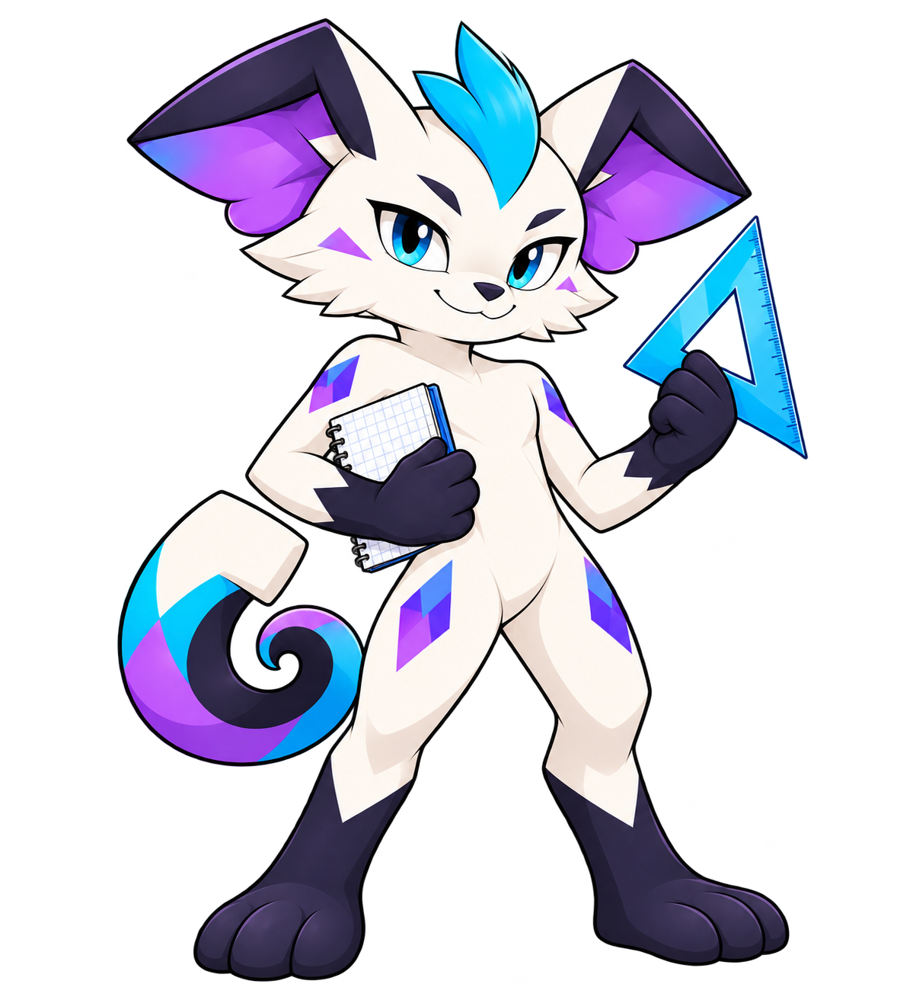
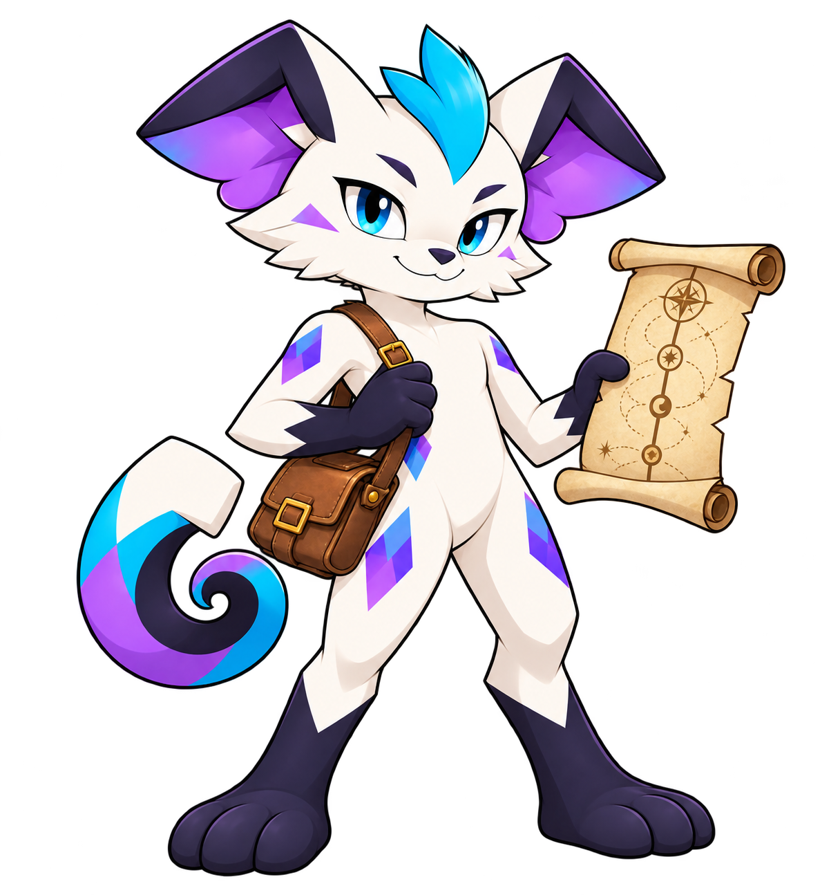

CURIOSITÉ · CODE · EXPÉRIMENTATIONS
Du code.
Des idées.
À toi de jouer.
Mon terrain de jeu pour construire, explorer et apprendre. Des jeux, des outils et des expérimentations : chaque projet a son univers et sa propre adresse.
Découvrir les projets ↓MES PROJETS
Des idées qui prennent vie.
Des projets indépendants.
Un même plaisir de construire.
PLATEFORME DE RÉVISION · PROJET EN COURS
Fithal
Le point de rencontre des matières : jeux, révisions et parcours personnel, avec Munky comme compagnon.
Découvrir Fithal ↗

Latitude
Villes, régions, fleuves et climats : prends tes repères, explore la carte et teste ta mémoire.
Explore. Repère. Retiens. ↗
Déclic
Calcule, essaie, comprends. Des missions courtes pour transformer les problèmes en déclics.
Trouver le déclic ↗
Chroniques
Relie les événements, remonte les frises et comprends les histoires derrière les dates.
Remonter le temps ↗Chaque idée garde son univers. D’autres projets viendront rejoindre cette collection.